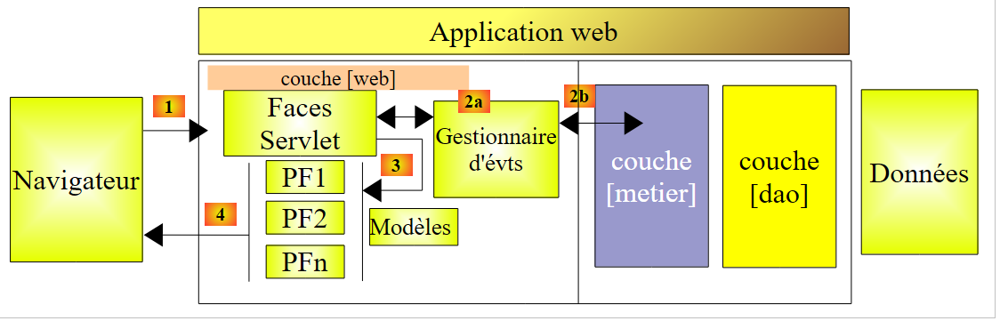
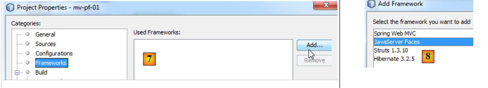
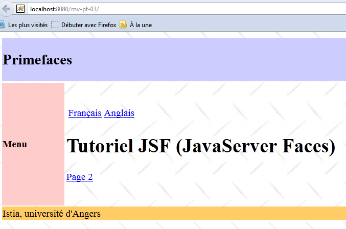
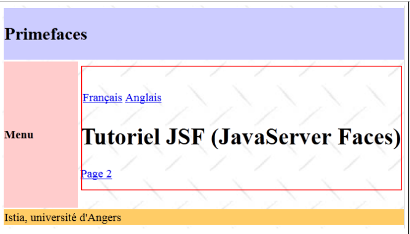
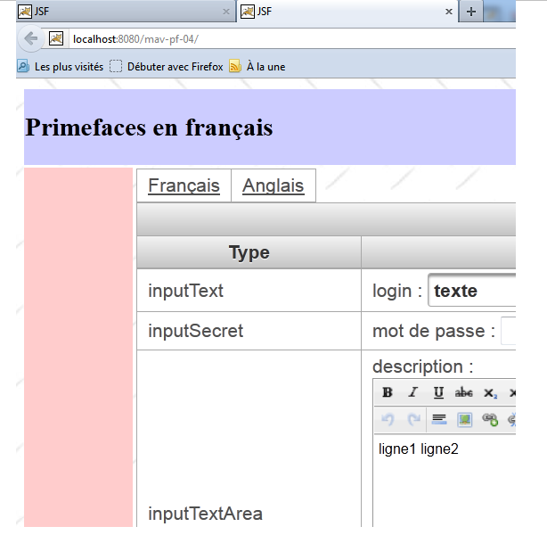
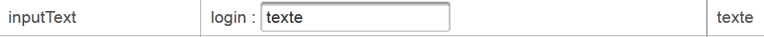
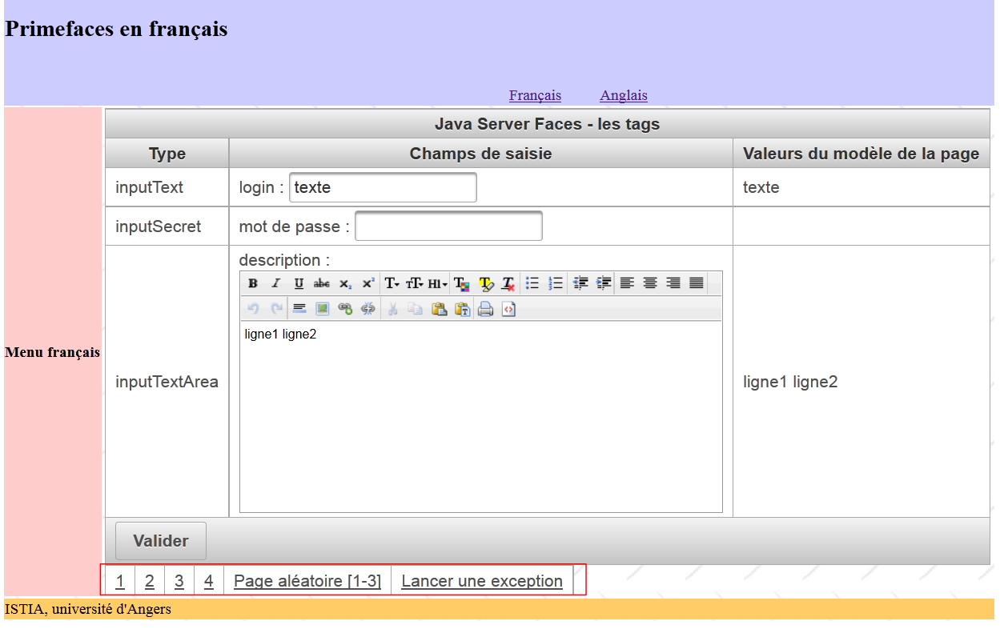
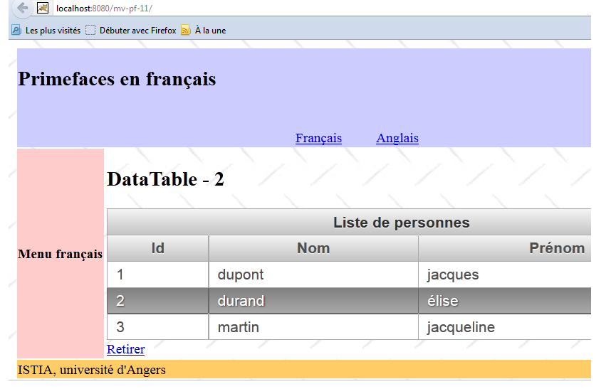
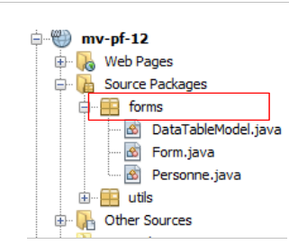
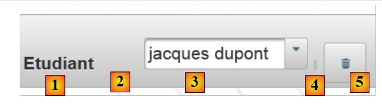

5. Introduction à la bibliothèque de composants PrimeFaces
5.1. La place de Primefaces dans une application JSF
Revenons à l'architecture d'une application JSF telle que nous l'avons étudiée au début de ce document :
 |
Les pages JSF étaient construites avec trois bibliothèques de balises :
- ligne 2 : les balises <h:x> de l'espace de noms [http://java.sun.com/jsf/html] qui correspondent aux balises HTML,
- ligne 3 : les balises <f:y> de l'espace de noms [http://java.sun.com/jsf/core] qui correspondent aux balises JSF,
- ligne 4 : les balises <ui:z> de l'espace de noms [http://java.sun.com/jsf/facelets] qui correspondent aux balises des facelets.
Pour construire les pages JSF, nous allons ajouter une quatrième bibliothèque de balises, celles des composants Primefaces.
- ligne 3 : les balises <p:z> de l'espace de noms [http://primefaces.org/ui] correspondent aux composants Primefaces.
C'est la seule modification qui va apparaître. Elle apparaît donc dans les vues. Les gestionnaires d'événements et les modèles restent ce qu'ils étaient avec JSF. C'est un point important à comprendre.
L'utilisation des composants Primefaces permet de créer des interfaces web plus conviviales grâce au nombreux composants de cette bibliothèque et plus fluides grâce à la technologie AJAX qu'elle utilise nativement. On parle alors d'interfaces riches ou RIA (Rich Internet Application).
L'architecture JSF précédente deviendra l'architecture PF (Primefaces) suivante :
 |
5.2. Les apports de Primefaces
Le site de Primefaces [http://www.primefaces.org/showcase/ui/home.jsf] donne la liste des composants utilisables dans une page PF :
 |
Dans les exemples à venir, nous utiliserons les deux premières caractéristiques de Primefaces :
- certains de la centaine de composants offerts,
- le comportement AJAX natif de ceux-ci.
Parmi les composants offerts :
 |  |  |
Nous n'utiliserons qu'une quinzaine d'entre-eux dans nos exemples, mais ce sera suffisant pour comprendre les principes de construction d'une page Primefaces.
5.3. Apprentissage de Primefaces
Primefaces offre des exemples d'utilisation de chacun de ses composants. Il suffit de cliquer sur son lien. Regardons un exemple :
 |
- en [1], l'exemple pour le composant [Spinner],
- en [2], la boîte de dialogue affichée après un clic sur le bouton [Submit].
Il y a là pour nous, trois nouveautés :
- le composant [Spinner] qui n'existe pas de base en JSF,
- idem pour la boîte de dialogue,
- enfin, le POST provoqué par le [Submit] est ajaxifié. Si on observe bien le navigateur lors du POST, on ne voit pas le sablier. La page n'est pas rechargée. Elle est simplement modifiée : un nouveau composant, ici la boît de dialogue apparaît dans la page.
Voyons comment tout cela est produit. Le code XHTML de l'exemple est le suivant :
<h:form>
<p:panel header="Spinners">
<h:panelGrid id="grid" columns="2" cellpadding="5">
<h:outputLabel for="spinnerBasic" value="Basic Spinner: " />
<p:spinner id="spinnerBasic" value="#{spinnerController.number1}"/>
<h:outputLabel for="spinnerStep" value="Step Factor: " />
<p:spinner id="spinnerStep" value="#{spinnerController.number2}" stepFactor="0.25"/>
<h:outputLabel for="minmax" value="Min/Max: " />
<p:spinner id="minmax" value="#{spinnerController.number3}" min="0" max="100"/>
<h:outputLabel for="prefix" value="Prefix: " />
<p:spinner id="prefix" value="0" prefix="$" min="0" value="#{spinnerController.number4}"/>
<h:outputLabel for="ajaxspinner" value="Ajax Spinner: " />
<p:outputPanel>
<p:spinner id="ajaxspinner" value="#{spinnerController.number5}">
<p:ajax update="ajaxspinnervalue" process="@this" />
</p:spinner>
<h:outputText id="ajaxspinnervalue" value="#{spinnerController.number5}"/>
</p:outputPanel>
</h:panelGrid>
</p:panel>
<p:commandButton value="Submit" update="display" oncomplete="dialog.show()" />
<p:dialog header="Values" widgetVar="dialog" showEffect="fold" hideEffect="fold">
...
</p:dialog>
</h:form>
Tout d'abord, constatons qu'on retrouve des balises JSF classiques : <h:form> ligne 1, <h:panelGrid> ligne 3, <h:outputLabel> ligne 4. Certaines balises JSF sont reprises par PF et enrichies : <p:commandButton> ligne 21. Ensuite, on trouve des balises PF de mise en forme : <p:panel> ligne 2, <p:outputPanel> ligne 13, <p:dialog> ligne 23. Enfin, on a des balises de saisie : <p:spinner> ligne 5.
Analysons ce code en correspondance avec la vue :
 |
- en [1], le composant obtenu avec la balise <p:panel> de la ligne 2,
- en [2], le champ de saisie obtenu par la combinaison d'une balise <p:outputLabel> et <p:spinner>, lignes 6 et 7,
- en [3], le bouton du POST obtenu avec la balise <p:commandButton> de la ligne 21,
- en [4], la boîte de dialogue des lignes 23-25,
- en [5], un conteneur invisible pour deux composants. Il est créé par la balise <p:outputPanel> de la ligne 13.
Analysons le code suivant qui met en oeuvre une action AJAX :
<h:outputLabel for="ajaxspinner" value="Ajax Spinner: " />
<p:outputPanel>
<p:spinner id="ajaxspinner" value="#{spinnerController.number5}">
<p:ajax update="ajaxspinnervalue" process="@this" />
</p:spinner>
<h:outputText id="ajaxspinnervalue" value="#{spinnerController.number5}"/>
</p:outputPanel>
Ce code génère la vue suivante :
 |
- ligne 1 : affiche le texte [1]. Est en même temps un libellé pour le composant d'id=ajaxspinner (attribut for). Ce composant est celui de la ligne 3(attribut id),,
- lignes 3-5 : affichent le composant [2]. Ce composant est un composant de saisie / affichage associé au modèle #{spinnerController.number5} (attribut value),
- ligne 6 : affiche le composant [3]. Ce composant est un composant d'affichage lié au modèle #{spinnerController.number5} (attribut value),
- ligne 4 : la balise <p:ajax> ajoute un comportement AJAX au spinner. A chaque fois que celui-ci change de valeur, un POST de cette valeur (attribut process="@this") est fait au modèle #{spinnerController.number5}. Ceci fait, une mise à jour de la page est faite (attribut update). Cet attribut a pour valeur l'id d'un composant de la page, ici celui de la ligne 6. Le composant cible de l'attribut update est alors mis à jour avec le modèle. Celui-ci est de nouveau #{spinnerController.number5}, donc la valeur du spinner. Ainsi la zone [3] suit les saisies de la zone [2].
On a là un comportement AJAX, acronyme qui signifie Asynchronous Javascript And XML. De façon générale, un comportement AJAX est le suivant :
 |
- le navigateur affiche une page HTML qui contient du code Javascript (J de AJAX). Les éléments de la page forment un objet Javascript qu'on appelle le DOM (Document Object Model),
- le serveur loge l'application web qui a produit cette page,
- en [1], un événement se produit dans la page. Par exemple l'incrémentation du spinner. Cet événement est géré par du Javascript,
- en [2], le Javascript fait un POST à l'application web. Il le fait de façon asynchrone (le A de AJAX). L'utilisateur peut continuer à travailler avec la page. Elle n'est pas gelée mais on peut si nécessaire la geler. Le POST met à jour le modèle de la page à partir des valeurs postées, ici le modèle #{spinnerController.number5},
- en [3], l'application web renvoie au Javascript, une réponse XML (le X de AJAX) ou JSON (JavaScript Object Notation),
- en [4], le Javascript utilise cette réponse pour mettre à jour une zone précise du DOM, ici la zone d'id=ajaxspinnervalue.
Lorsqu'on utilise JSF et Primefaces, le Javascript est généré par Primefaces. Cette bibliothèque s'appuie sur la bibliothèque Javascript JQuery. De même les composants Primefaces s'appuient sur ceux de la bibliothèque de composants JQuery UI (User Interface). Donc JQuery est à la base de Primefaces.
Revenons à notre exemple et présentons maintenant le POST du bouton [Submit] :
 |
Le code associé au POST est le suivant :
<p:commandButton value="Submit" update="display" oncomplete="dialog.show()" />
<p:dialog header="Values" widgetVar="dialog" showEffect="fold" hideEffect="fold">
<h:panelGrid id="display" columns="2" cellpadding="5">
<h:outputText value="Value 1: " />
<h:outputText value="#{spinnerController.number1}" />
<h:outputText value="Value 2: " />
<h:outputText value="#{spinnerController.number2}" />
<h:outputText value="Value 3: " />
<h:outputText value="#{spinnerController.number3}" />
<h:outputText value="Value 4: " />
<h:outputText value="#{spinnerController.number4}" />
<h:outputText value="Value 5: " />
<h:outputText value="#{spinnerController.number5}" />
</h:panelGrid>
</p:dialog>
</h:form>
- ligne 1 : le POST est provoqué par le bouton de la ligne 1. Dans Primefaces, les balises qui provoquent un POST le font par défaut sous la forme d'un appel AJAX. C'est pourquoi ces balises ont un attribut update pour indiquer la zone à mettre à jour, une fois la réponse du serveur reçue. Ici, la zone mise à jour est le panelGrid de la ligne 4. Donc au retour du POST, cette zone va être mise à jour par les valeurs postées au modèle. Cependant, elles sont à l'intérieur d'une boîte de dialogue non visible par défaut. C'est l'attribut oncomplete de la ligne 1 qui l'affiche. Cet événement se produit à la fin du traitement du POST. La valeur de cet attribut est du code Javascript. Ici, on affiche la boîte de dialogue qui a l'id=dialog, donc celle de la ligne 3 (attribut widgetVar),
- ligne 3 : on voit divers attributs de la boîte de dialogue. Il faut expérimenter pour voir ce qu'ils font.
Nous avons parlé du modèle mais ne l'avons pas encore présenté. C'est celui-ci :
De façon générale, on peut procéder comme suit :
- repérer le composant Primefaces qu'on veut utiliser,
- étudier son exemple. Les exemples de Primefaces sont bien faits et facilement compréhensibles.
5.4. Un premier projet Primefaces : mv-pf-01
Construisons un projet web Maven avec Netbeans :
 |
- [1, 2, 3] : on construit un projet Maven de type [Web Application],
 |
- [4] : le serveur sera Tomcat,
- en [5], le projet généré,
- en [6], on le nettoie du fichier [index.jsp] et du paquetage Java,
 |
- en [7, 8] : dans les propriétés du projet, on ajoute un support pour Java server Faces,
 |
- en [9], dans l'onglet [Components] on choisit la bibliothèque de composants Primefaces. Netbeans offre un support pour d'autres bibliothèques de composants : ICEFaces et RichFaces.
- en[10], le projet généré. En [11], on notera la dépendance sur Primefaces.
En clair, un projet Primefaces est un projet JSF classique auquel on a ajouté une dépendance sur Primefaces. Rien de plus.
Ayant compris cela, nous modifions le fichier [pom.xml] pour travailler avec les dernières versions des bibliothèques :
<dependency>
<groupId>com.sun.faces</groupId>
<artifactId>jsf-impl</artifactId>
<version>2.1.8</version>
<scope>compile</scope>
</dependency>
<dependency>
<groupId>org.primefaces</groupId>
<artifactId>primefaces</artifactId>
<version>3.3</version>
<scope>compile</scope>
</dependency>
<dependency>
<groupId>javax</groupId>
<artifactId>javaee-web-api</artifactId>
<version>6.0</version>
<scope>provided</scope>
</dependency>
</dependencies>
<repositories>
<repository>
<id>jsf20</id>
<name>Repository for library Library[jsf20]</name>
<url>http://download.java.net/maven/2/</url>
</repository>
<repository>
<id>primefaces</id>
<name>Repository for library Library[primefaces]</name>
<url>http://repository.primefaces.org/</url>
</repository>
</repositories>
Lignes 26-30, on notera le dépôt Maven pour Primefaces. Ces modifications faites, on construit le projet pour lancer le téléchargement des dépendances. On obtient alors le projet [12].
Maintenant, essayons de reproduire l'exemple que nous avons étudié. La page [index.html] devient la suivante :
<?xml version='1.0' encoding='UTF-8' ?>
<!DOCTYPE html PUBLIC "-//W3C//DTD XHTML 1.0 Transitional//EN" "http://www.w3.org/TR/xhtml1/DTD/xhtml1-transitional.dtd">
<html xmlns="http://www.w3.org/1999/xhtml"
xmlns:h="http://java.sun.com/jsf/html"
xmlns:p="http://primefaces.org/ui"
xmlns:f="http://java.sun.com/jsf/core"
xmlns:ui="http://java.sun.com/jsf/facelets">
<h:head>
<title>Spinner</title>
</h:head>
<h:body>
<!-- formulaire -->
<h:form>
<p:panel header="Spinners">
<h:panelGrid id="grid" columns="2" cellpadding="5">
<h:outputLabel for="spinnerBasic" value="Basic Spinner: " />
<p:spinner id="spinnerBasic" value="#{spinnerController.number1}"/>
<h:outputLabel for="spinnerStep" value="Step Factor: " />
<p:spinner id="spinnerStep" value="#{spinnerController.number2}" stepFactor="0.25"/>
<h:outputLabel for="minmax" value="Min/Max: " />
<p:spinner id="minmax" value="#{spinnerController.number3}" min="0" max="100"/>
<h:outputLabel for="prefix" value="Prefix: " />
<p:spinner id="prefix" prefix="$" min="0" value="#{spinnerController.number4}"/>
<h:outputLabel for="ajaxspinner" value="Ajax Spinner: " />
<p:outputPanel>
<p:spinner id="ajaxspinner" value="#{spinnerController.number5}">
<p:ajax update="ajaxspinnervalue" process="@this" />
</p:spinner>
<h:outputText id="ajaxspinnervalue" value="#{spinnerController.number5}"/>
</p:outputPanel>
</h:panelGrid>
</p:panel>
<p:commandButton value="Submit" update="display" oncomplete="dialog.show()" />
<!-- boîte de dialogue -->
<p:dialog header="Values" widgetVar="dialog" showEffect="fold" hideEffect="fold">
<h:panelGrid id="display" columns="2" cellpadding="5">
<h:outputText value="Value 1: " />
<h:outputText value="#{spinnerController.number1}" />
<h:outputText value="Value 2: " />
<h:outputText value="#{spinnerController.number2}" />
<h:outputText value="Value 3: " />
<h:outputText value="#{spinnerController.number3}" />
<h:outputText value="Value 4: " />
<h:outputText value="#{spinnerController.number4}" />
<h:outputText value="Value 5: " />
<h:outputText value="#{spinnerController.number5}" />
</h:panelGrid>
</p:dialog>
</h:form>
</h:body>
</html>
On n'oubliera pas la ligne 5 qui déclare l'espace de noms de la bibliothèque de balises Primefaces. On rajoute au projet, le bean qui sert de modèle à la page :
 |
Le bean est le suivant :
package beans;
import javax.faces.bean.RequestScoped;
import javax.faces.bean.ManagedBean;
@ManagedBean
@RequestScoped
public class SpinnerController {
// modèle
private int number1;
private double number2;
private int number3;
private int number4;
private int number5;
// getters et setters
...
}
La classe est un bean (ligne 6) de portée requête (ligne 7). Comme on n'a pas indiqué de nom, le bean porte le nom de la classe avec le premier caractère en minuscule : spinnerController.
Lorsqu'on exécute le projet, on obtient la chose suivante :
 |
Nous venons ainsi de montrer comment tester un exemple pris sur le site de Primefaces. Tous les exemples peuvent être testés de cette façon.
Dans la suite, nous allons nous intéresser qu'à certains composants de Primefaces. Nous allons tout d'abord reprendre les exemples étudiés avec JSF et remplacer certaines balises JSF par des balises Primefaces. L'aspect des pages sera un peu modifié, elles auront un comportement AJAX mais les beans associés n'auront pas à être changés. Dans chacun des exemples à venir, nous nous contentons de présenter le code XHTML des pages et les copies d'écran associées. Le lecteur est invité à tester les exemples afin de déceler les différences entre les pages JSF et les pages PF.
5.5. Exemple mv-pf-02 : gestionnaire d'événement – internationalisation - navigation entre pages
Ce projet est le portage du projet JSF [mv-jsf2-02] (paragraphe 2.4, page 41) :
 |  |
Le projet Netbeans est le suivant :
 |
La page [index.html] est la suivante :
<?xml version='1.0' encoding='UTF-8' ?>
<!DOCTYPE html PUBLIC "-//W3C//DTD XHTML 1.0 Transitional//EN" "http://www.w3.org/TR/xhtml1/DTD/xhtml1-transitional.dtd">
<html xmlns="http://www.w3.org/1999/xhtml"
xmlns:h="http://java.sun.com/jsf/html"
xmlns:p="http://primefaces.org/ui"
xmlns:f="http://java.sun.com/jsf/core"
xmlns:ui="http://java.sun.com/jsf/facelets">
<f:view locale="#{changeLocale.locale}">
<h:head>
<title><h:outputText value="#{msg['welcome.titre']}" /></title>
</h:head>
<body>
<h:form id="formulaire">
<h:panelGrid columns="2">
<p:commandLink value="#{msg['welcome.langue1']}" action="#{changeLocale.setFrenchLocale}" ajax="false"/>
<p:commandLink value="#{msg['welcome.langue2']}" action="#{changeLocale.setEnglishLocale}" ajax="false"/>
</h:panelGrid>
<h1><h:outputText value="#{msg['welcome.titre']}" /></h1>
<p:commandLink value="#{msg['welcome.page1']}" action="page1" ajax="false"/>
</h:form>
</body>
</f:view>
</html>
Aux lignes 15, 16 et 19 les balises <h:commandLink> ont été remplacées par des balises <p:commandLink>. Cette balise a un comportement AJAX par défaut qu'on peut inhiber en mettant l'attribut ajax="false". Donc ici, les balises <p:commandLink> se comportent comme des balises <h:commandLink> : il y aura un rechargement de la page lors d'un clic sur ces liens.
5.6. Exemple mv-pf-03 : mise en page à l'aide des facelets
Ce projet présente la création de pages XHTML à l'aide des modèles facelets de l'exemple [mv-jsf2-09] (paragraphe 2.11) :
 |
Le projet Netbeans est le suivant :
 |
- en [1], les fichiers de configuration du projet JSF,
- en [2], les pages XHTML,
- en [3], le bean support pour le changement de langues,
- en [4], les fichiers de messages,
- en [5], les dépendances.
Les pages du projet ont pour modèle la page [layout.xhtml] :
<?xml version='1.0' encoding='UTF-8' ?>
<!DOCTYPE html PUBLIC "-//W3C//DTD XHTML 1.0 Transitional//EN" "http://www.w3.org/TR/xhtml1/DTD/xhtml1-transitional.dtd">
<html xmlns="http://www.w3.org/1999/xhtml"
xmlns:h="http://java.sun.com/jsf/html"
xmlns:p="http://primefaces.org/ui"
xmlns:f="http://java.sun.com/jsf/core"
xmlns:ui="http://java.sun.com/jsf/facelets">
<f:view locale="#{changeLocale.locale}">
<h:head>
<title>JSF</title>
<h:outputStylesheet library="css" name="styles.css"/>
</h:head>
<h:body style="background-image: url('${request.contextPath}/resources/images/standard.jpg');">
<h:form id="formulaire">
<table style="width: 600px">
<tr>
<td colspan="2" bgcolor="#ccccff">
<ui:include src="entete.xhtml"/>
</td>
</tr>
<tr>
<td style="width: 100px; height: 200px" bgcolor="#ffcccc">
<ui:include src="menu.xhtml"/>
</td>
<td>
<p:outputPanel id="contenu">
<ui:insert name="contenu" >
<h2>Contenu</h2>
</ui:insert>
</p:outputPanel>
</td>
</tr>
<tr bgcolor="#ffcc66">
<td colspan="2">
<ui:include src="basdepage.xhtml"/>
</td>
</tr>
</table>
</h:form>
</h:body>
</f:view>
</html>
- ligne 9 : une balise <f:view> encadre toute la page afin de profiter de l'internationalisation qu'elle permet,
- ligne 15 : un formulaire d'id formulaire. Ce formulaire forme le corps de la page. Dans ce corps, il n'y a qu'une partie dynamique, celle des lignes 28-30. C'est là que viendra s'insérer la partie variable de la page :
 |
- la zone encadrée ci-dessus sera mise à jour par des appels AJAX. Afin de l'identifier, nous l'avons incluse dans un conteneur Primefaces généré par la balise <p:outputPanel> (ligne 27). Et ce conteneur a été nommé contenu (attribut id). Comme il se trouve dans un formulaire qui est lui-même un conteneur de nom formulaire, le nom complet de la zone dynamique est :formulaire:contenu. Le premier : indique qu'on part de la racine du document, puis on passe dans le conteneur de nom formulaire, puis dans le conteneur de nom contenu. Une difficulté avec AJAX est de nommer correctement les zones à mettre à jour par un appel AJAX. Le plus simple est de regarder le code source de la page HTML reçue :
Ci-dessus, on voit que la balise <h:outputPanel> a généré une balise HTML <span>. Dans cet exemple, le nom relatif formulaire:contenu (sans le : de départ) et le nom complet :formulaire:contenu (avec le : de départ) désignent le même objet.
On retiendra que les appels AJAX (<p:commandButton>, <p:commandLink>) mettant à jour la zone dynamique auront l'attribut update=":formulaire:contenu".
La page [index.xhtml] est l'unique page affichée par le projet :
<?xml version='1.0' encoding='UTF-8' ?>
<!DOCTYPE html PUBLIC "-//W3C//DTD XHTML 1.0 Transitional//EN" "http://www.w3.org/TR/xhtml1/DTD/xhtml1-transitional.dtd">
<html xmlns="http://www.w3.org/1999/xhtml"
xmlns:h="http://java.sun.com/jsf/html"
xmlns:p="http://primefaces.org/ui"
xmlns:f="http://java.sun.com/jsf/core"
xmlns:ui="http://java.sun.com/jsf/facelets">
<ui:composition template="layout.xhtml">
<ui:define name="contenu">
<ui:fragment rendered="#{requestScope.page1 || requestScope.page2==null}">
<ui:include src="page1.xhtml"/>
</ui:fragment>
<ui:fragment rendered="#{requestScope.page2}">
<ui:include src="page2.xhtml"/>
</ui:fragment>
</ui:define>
</ui:composition>
</html>
- ligne 8, le modèle de [index.xhtml] est la page [layout.xhtml] qu'on vient de présenter,
- ligne 9, c'est la zone d'id contenu qui est mise à jour par [index.html]. Dans cette zone, il y a deux fragments :
- le fragment [page1.xhtml] ligne 11 ;
- le fragment [page2.xhtml] ligne 14.
Ces deux fragments sont exclusifs l'un de l'autre.
- ligne 10 : le fragment [page1.xhtml] est affiché si la requête a l'attribut page1 à true ou si l'attribut page2 n'existe pas. C'est le cas de la toute première requête où aucun de ces attributs ne sera présent dans la requête. Dans ce cas, on affichera le fragment [page1.xhtml],
- ligne 11, le fragment [page2.xhtml] est affiché si la requête a l'attribut page2 à true
Le fragment [page1.xhtml] est le suivant :
<?xml version='1.0' encoding='UTF-8' ?>
<!DOCTYPE html PUBLIC "-//W3C//DTD XHTML 1.0 Transitional//EN" "http://www.w3.org/TR/xhtml1/DTD/xhtml1-transitional.dtd">
<html xmlns="http://www.w3.org/1999/xhtml"
xmlns:h="http://java.sun.com/jsf/html"
xmlns:p="http://primefaces.org/ui"
xmlns:f="http://java.sun.com/jsf/core"
xmlns:ui="http://java.sun.com/jsf/facelets">
<body>
<h:panelGrid columns="2">
<p:commandLink value="#{msg['page1.langue1']}" actionListener="#{changeLocale.setFrenchLocale}" ajax="true" update=":formulaire:contenu"/>
<p:commandLink value="#{msg['page1.langue2']}" actionListener="#{changeLocale.setEnglishLocale}" ajax="true" update=":formulaire:contenu"/>
</h:panelGrid>
<h1><h:outputText value="#{msg['page1.titre']}" /></h1>
<p:commandLink value="#{msg['page1.lien']}" update=":formulaire:contenu">
<f:setPropertyActionListener value="#{true}" target="#{requestScope.page2}" />
</p:commandLink>
</body>
</html>
et affiche le contenu suivant :
 |
- lignes 11 et 12, les deux liens pour changer la langue. Ces deux liens provoquent des appels AJAX (ajax=true). C'est la valeur par défaut. On peut donc ne pas mettre l'attribut ajax=true. Nous ne le ferons plus par la suite. On notera que ces deux liens mettent à jour la zone :formulaire:contenu (attribut update), celle qui est encadrée ci-dessus,
- ligne 15 : un lien AJAX de navigation qui là encore met à jour la zone :formulaire:contenu,
- ligne 16 : on utilise la balise <h:setPropertyActionListener> pour mettre l'attribut page2 dans la requête avec la valeur true. Cela va avoir pour effet d'afficher le fragment [page2.xhtml] (ligne 6 ci-dessous) dans la page [index.xhtml] :
<ui:composition template="layout.xhtml">
<ui:define name="contenu">
<ui:fragment rendered="#{requestScope.page1 || requestScope.page2==null}">
<ui:include src="page1.xhtml"/>
</ui:fragment>
<ui:fragment rendered="#{requestScope.page2}">
<ui:include src="page2.xhtml"/>
</ui:fragment>
</ui:define>
</ui:composition>
Le fragment [page2.xhtml] est analogue :
 |
Le code de [page2.xhtml] est le suivant :
<?xml version='1.0' encoding='UTF-8' ?>
<!DOCTYPE html PUBLIC "-//W3C//DTD XHTML 1.0 Transitional//EN" "http://www.w3.org/TR/xhtml1/DTD/xhtml1-transitional.dtd">
<html xmlns="http://www.w3.org/1999/xhtml"
xmlns:h="http://java.sun.com/jsf/html"
xmlns:p="http://primefaces.org/ui"
xmlns:f="http://java.sun.com/jsf/core"
xmlns:ui="http://java.sun.com/jsf/facelets">
<body>
<h1><h:outputText value="#{msg['page2.entete']}"/></h1>
<p:commandLink value="#{msg['page2.lien']}" update=":formulaire:contenu">
<f:setPropertyActionListener value="#{true}" target="#{requestScope.page1}" />
</p:commandLink>
</body>
</html>
De cet exemple, nous retiendrons les points suivants pour la suite :
- nous utiliserons le modèle [layout.xhtml] comme modèle des pages,
- la zone dynamique sera identifiée par l'id :formulaire:contenu et sera mise à jour par des appels AJAX.
5.7. Exemple mv-pf-04 : formulaire de saisie
Ce projet est le portage du projet JSF2 [mv-jsf2-03] (cf paragraphe 2.5) :
 |
Le projet Netbeans est le suivant :
 |
Ci-dessus, en [1], les pages XHTML du projet. La mise en page est assurée par le modèle [layout.xhtml] étudié précédemment. La page [index.xhtml] est l'unique page du projet. Elle s'affiche dans la zone :formulaire:contenu. Son code est le suivant :
<?xml version='1.0' encoding='UTF-8' ?>
<!DOCTYPE html PUBLIC "-//W3C//DTD XHTML 1.0 Transitional//EN" "http://www.w3.org/TR/xhtml1/DTD/xhtml1-transitional.dtd">
<html xmlns="http://www.w3.org/1999/xhtml"
xmlns:h="http://java.sun.com/jsf/html"
xmlns:p="http://primefaces.org/ui"
xmlns:f="http://java.sun.com/jsf/core"
xmlns:ui="http://java.sun.com/jsf/facelets">
<ui:composition template="layout.xhtml">
<ui:define name="contenu">
<ui:include src="page1.xhtml"/>
</ui:define>
</ui:composition>
</html>
Elle se contente d'afficher le frament [page1.xhtml]. Celui-ci est l'équivalent du formulaire étudié dans l'exemple [mv-jsf2-03]. Rappelons que celui-ci avait pour but de présenter les balises JSF de saisie. Ces balises ont été ici remplacées par des balises Primefaces.
PanelGrid
Pour mettre en forme les éléments de [page1.xhtml], nous utilisons la balise <p:panelGrid>. Par exemple, pour les deux liens des langues :
<!-- langues -->
<p:panelGrid columns="2">
<p:commandLink value="#{msg['form.langue1']}" actionListener="#{changeLocale.setFrenchLocale}" update=":formulaire:contenu"/>
<p:commandLink value="#{msg['form.langue2']}" actionListener="#{changeLocale.setEnglishLocale}" update=":formulaire:contenu"/>
</p:panelGrid>
Cela donne le rendu suivant :
 |
Une autre forme de la balise <p:panelGrid> est la suivante :
<p:panelGrid>
<f:facet name="header">
<p:row>
<p:column colspan="3"><h:outputText value="#{msg['form.titre']}"/></p:column>
</p:row>
<p:row>
<p:column><h:outputText value="#{msg['form.headerCol1']}"/></p:column>
<p:column><h:outputText value="#{msg['form.headerCol2']}"/></p:column>
<p:column><h:outputText value="#{msg['form.headerCol3']}"/></p:column>
</p:row>
</f:facet>
<p:row>
<p:column>
<h:outputText value="inputText"/>
</p:column>
<p:column>
<h:outputLabel for="inputText" value="#{msg['form.loginPrompt']}" />
<p:inputText id="inputText" value="#{form.inputText}"/>
</p:column>
<p:column>
<h:outputText id="inputTextValue" value="#{form.inputText}"/>
</p:column>
</p:row>
...
<f:facet name="footer">
<p:row>
<p:column colspan="3">
<div align="center">
<p:commandButton value="#{msg['form.submitText']}" update=":formulaire:contenu"/>
</div>
</p:column>
</p:row>
</f:facet>
</p:panelGrid>
Les lignes et les colonnes du tableau sont identifiées par les balises <p:row> et <p:column>.
Les lignes 3-12 définissent l'entête du tableau :
 |
Les lignes 14-25 définissent une ligne du tableau :
 |
Les lignes 27-35 définissent le pied de page du tableau :
 |
inputText
<p:row>
<p:column>
<h:outputText value="inputText"/>
</p:column>
<p:column>
<h:outputLabel for="inputText" value="#{msg['form.loginPrompt']}" />
<p:inputText id="inputText" value="#{form.inputText}"/>
</p:column>
<p:column>
<h:outputText id="inputTextValue" value="#{form.inputText}"/>
</p:column>
</p:row>
password
<p:row>
<p:column>
<h:outputText value="inputSecret"/>
</p:column>
<p:column>
<h:outputLabel for="inputSecret" value="#{msg['form.passwdPrompt']}"/>
<p:password id="inputSecret" value="#{form.inputSecret}" feedback="true"
promptLabel="#{msg['form.promptLabel']}" weakLabel="#{msg['form.weakLabel']}"
goodLabel="#{msg['form.goodLabel']}" strongLabel="#{msg['form.strongLabel']}" />
</p:column>
<p:column>
<h:outputText id="inputSecretValue" value="#{form.inputSecret}"/>
</p:column>
</p:row>
 |
Ligne 7, l'attribut feedback=true permet d'avoir un retour sur la qualité [1] du mot de passe.
inputTextArea
<p:row>
<p:column>
<h:outputText value="inputTextArea"/>
</p:column>
<p:column>
<h:outputLabel for="inputTextArea" value="#{msg['form.descPrompt']}"/>
<p:editor id="inputTextArea" value="#{form.inputTextArea}" rows="4"/>
</p:column>
<p:column>
<h:outputText id="inputTextAreaValue" value="#{form.inputTextArea}"/>
</p:column>
</p:row>
 |
Ligne 7, la balise <p:editor> affiche un éditeur riche qui permet de mettre en forme le texte (police, taille, couleur, alignement, ...). Ce qui est posté au serveur est le code HTML du texte saisi [2].
selectOneListBox
<p:row>
<p:column>
<h:outputText value="selectOneListBox"/>
</p:column>
<p:column>
<h:outputLabel for="selectOneListBox1" value="#{msg['form.selectOneListBox1Prompt']}"/>
<p:selectOneListbox id="selectOneListBox1" value="#{form.selectOneListBox1}">
<f:selectItem itemValue="1" itemLabel="un"/>
<f:selectItem itemValue="2" itemLabel="deux"/>
<f:selectItem itemValue="3" itemLabel="trois"/>
</p:selectOneListbox>
</p:column>
<p:column>
<h:outputText id="selectOneListBox1Value" value="#{form.selectOneListBox1}"/>
</p:column>
</p:row>
 |
selectOneMenu
<p:row>
<p:column>
<h:outputText value="selectOneMenu"/>
</p:column>
<p:column>
<h:outputLabel for="selectOneMenu" value="#{msg['form.selectOneMenuPrompt']}"/>
<p:selectOneMenu id="selectOneMenu" value="#{form.selectOneMenu}">
<f:selectItem itemValue="1" itemLabel="un"/>
<f:selectItem itemValue="2" itemLabel="deux"/>
<f:selectItem itemValue="3" itemLabel="trois"/>
<f:selectItem itemValue="4" itemLabel="quatre"/>
<f:selectItem itemValue="5" itemLabel="cinq"/>
</p:selectOneMenu>
</p:column>
<p:column>
<h:outputText id="selectOneMenuValue" value="#{form.selectOneMenu}"/>
</p:column>
</p:row>
 |
selectManyMenu
<p:row>
<p:column>
<h:outputText value="selectManyMenu"/>
</p:column>
<p:column>
<h:outputLabel for="selectManyMenu" value="#{msg['form.selectManyMenuPrompt']}"/>
<p:selectManyMenu id="selectManyMenu" value="#{form.selectManyMenu}" >
<f:selectItem itemValue="1" itemLabel="un"/>
<f:selectItem itemValue="2" itemLabel="deux"/>
<f:selectItem itemValue="3" itemLabel="trois"/>
<f:selectItem itemValue="4" itemLabel="quatre"/>
<f:selectItem itemValue="5" itemLabel="cinq"/>
</p:selectManyMenu>
<p:commandLink value="#{msg['form.buttonRazText']}" actionListener="#{form.clearSelectManyMenu()}" update=":formulaire:selectManyMenu" style="margin-left: 10px"/>
</p:column>
<p:column>
<h:outputText id="selectManyMenuValue" value="#{form.selectManyMenuValue}"/>
</p:column>
</p:row>
 |
Ligne 14, on notera que le lien [Raz] fait une mise à jour AJAX de la zone :formulaire:selectManyMenu qui correspond au composant de la ligne 6. Néanmoins, il faut savoir que lors du POST AJAX, toutes les valeurs du formulaire sont postées. Donc c'est la totalité du modèle qui est mis à jour. Avec ce modèle, on ne met cependant à jour que la zone :formulaire:selectManyMenu.
selectBooleanCheckbox
<p:row>
<p:column>
<h:outputText value="selectBooleanCheckbox"/>
</p:column>
<p:column>
<h:outputLabel for="selectBooleanCheckbox" value="#{msg['form.selectBooleanCheckboxPrompt']}"/>
<p:selectBooleanCheckbox id="selectBooleanCheckbox" value="#{form.selectBooleanCheckbox}"/>
</p:column>
<p:column>
<h:outputText id="selectBooleanCheckboxValue" value="#{form.selectBooleanCheckbox}"/>
</p:column>
</p:row>
 |
selectManyCheckbox
<p:row>
<p:column>
<h:outputText value="selectManyCheckbox"/>
</p:column>
<p:column>
<h:outputLabel for="selectManyCheckbox" value="#{msg['form.selectManyCheckboxPrompt']}"/>
<p:selectManyCheckbox id="selectManyCheckbox" value="#{form.selectManyCheckbox}">
<f:selectItem itemValue="1" itemLabel="rouge"/>
<f:selectItem itemValue="2" itemLabel="bleu"/>
<f:selectItem itemValue="3" itemLabel="blanc"/>
<f:selectItem itemValue="4" itemLabel="noir"/>
</p:selectManyCheckbox>
</p:column>
<p:column>
<h:outputText id="selectManyCheckboxValue" value="#{form.selectManyCheckboxValue}"/>
</p:column>
</p:row>
 |
selectOneRadio
<p:row>
<p:column>
<h:outputText value="selectOneRadio"/>
</p:column>
<p:column>
<h:outputLabel for="selectOneRadio" value="#{msg['form.selectOneRadioPrompt']}"/>
<p:selectOneRadio id="selectOneRadio" value="#{form.selectOneRadio}" >
<f:selectItem itemValue="1" itemLabel="voiture"/>
<f:selectItem itemValue="2" itemLabel="vélo"/>
<f:selectItem itemValue="3" itemLabel="scooter"/>
<f:selectItem itemValue="4" itemLabel="marche"/>
</p:selectOneRadio>
</p:column>
<p:column>
<h:outputText id="selectOneRadioValue" value="#{form.selectOneRadio}"/>
</p:column>
</p:row>
 |
5.8. Exemple : mv-pf-05 : listes dynamiques
Ce projet est le portage du projet JSF2 [mv-jsf2-04] (cf paragraphe 2.6) :

Ce projet n'amène pas de nouvelles balises Primefaces vis à vis du projet précédent. Aussi ne le commenterons-nous pas. Il fait partie de la liste des exemples mis à disposition du lecteur sur le site du document.
5.9. Exemple : mv-pf-06 : navigation – session – gestion des exceptions
Ce projet est le portage du projet JSF2 [mv-jsf2-05] (cf paragraphe 2.7) :
 |
De nouveau, cet exemple n'amène pas de balises Primefaces nouvelles. Nous ne commenterons que le tableau des liens encadré ci-dessus :
<p:panelGrid columns="6">
<p:commandLink value="1" action="form1?faces-redirect=true" ajax="false"/>
<p:commandLink value="2" action="#{form.doAction2}" ajax="false"/>
<p:commandLink value="3" action="form3?faces-redirect=true" ajax="false"/>
<p:commandLink value="4" action="#{form.doAction4}" ajax="false"/>
<p:commandLink value="#{msg['form.pagealeatoireLink']}" action="#{form.doAlea}" ajax="false"/>
<p:commandLink value="#{msg['form.exceptionLink']}" action="#{form.throwException}" ajax="false"/>
</p:panelGrid>
- les liens ont tous l'attribut ajax=false. Il y a donc un chargement de page normal,
- on notera lignes 2 et 4, la façon de faire une redirection.
5.10. Exemple : mv-pf-07 : validation et conversion des saisies
Ce projet est le portage du projet JSF2 [mv-jsf2-06] (cf paragraphe 2.8) :

L'application introduit deux nouvelles balises, la balise <p:messages> :
<p:messages globalOnly="true"/>

et la balise <p:message> :
<p:inputText id="saisie1" value="#{form.saisie1}" styleClass="saisie"/>
<p:message for="saisie1" styleClass="error"/>
 |
Vis à vis de la balise <h:message> de JSF, la balise <p:message> de PF amène les changements suivants :
- l'apparence du message d'erreur est différente [1],
- la zone de saisie erronée est entourée d'un cadre rouge [2].
5.11. Exemple : mv-pf-08 : événements liés au changement d'état de composants
Ce projet est le portage du projet JSF2 [mv-jsf2-07] (cf paragraphe 2.9) :

Le projet JSF introduisait la notion de listeners. La gestion du listener avec Primefaces a été faite différemment.
Avec JSF :
Avec Primefaces :
- ligne 2 : la balise <h:selectOneMenu> sans attribut valueChangeListener,
- ligne 4 : la balise <p:ajax> ajoute un comportement AJAX à sa balise parent <h:selectOneMenu>. Par défaut, elle réagit à l'événement " changement de valeur " de la liste combo1. Sur cet événement, les valeurs du formulaire auquel elle appartient vont être postées au serveur par un appel AJAX. Le modèle est donc mis à jour. On utilise ce nouveau modèle pour mettre à jour la liste déroulante identifiée par combo2 (ligne 10). On notera, ligne 4, que l'appel AJAX n'exécute pas de méthode du modèle. C'est inutile ici. On veut simplement changer le modèle par le POST des valeurs saisies.
5.12. Exemple : mv-pf-09 : saisie assistée
Ce projet présente des balises de saisie spécifiques à Primefaces qui facilitent la saisie de certains types de données :
 |
5.12.1. Le projet Netbeans
Le projet Netbeans est le suivant :
 |
L'intérêt du projet réside dans :
- l'unique page [index.html] affichée par celui-ci,
- le modèle [Form.java] de cette dernière.
5.12.2. Le modèle
Le formulaire présente quatre champs de saisie associés au modèle suivant :
package forms;
import java.io.Serializable;
import java.util.ArrayList;
import java.util.Date;
import java.util.List;
import javax.faces.bean.RequestScoped;
import javax.faces.bean.ManagedBean;
@ManagedBean
@SessionScoped
public class Form implements Serializable {
private Date calendrier;
private Integer slider = 100;
private Integer spinner = 1;
private String autocompleteValue;
public Form() {
}
public List<String> autocomplete(String query) {
...
}
// getters et setters
...
}
Les quatre saisies sont associées aux champs des lignes 14-17.
5.12.3. Le formulaire
Le formulaire est le suivant :
<?xml version='1.0' encoding='UTF-8' ?>
<html xmlns="http://www.w3.org/1999/xhtml"
xmlns:h="http://java.sun.com/jsf/html"
xmlns:p="http://primefaces.org/ui"
xmlns:f="http://java.sun.com/jsf/core"
xmlns:ui="http://java.sun.com/jsf/facelets">
<ui:composition template="layout.xhtml">
<ui:define name="contenu">
<h2><h:outputText value="#{msg['app.titre']}"/></h2>
<p:growl id="messages" autoUpdate="true"/>
<p:panelGrid columns="3" columnClasses="col1,col2,col3,col4">
<h:outputText value="#{msg['saisie.type']}" styleClass="entete"/>
<h:outputText value="#{msg['saisie.champ']}" styleClass="entete"/>
<h:outputText value="#{msg['bean.valeur']}" styleClass="entete"/>
<!-- calendrier -->
...
<!-- slider -->
...
<!-- spinner -->
...
<!-- autocomplete -->
...
</p:panelGrid>
</ui:define>
</ui:composition>
</html>
Examinons les quatre champs de saisie.
5.12.4. Le calendrier
La balise <p:calendar> permet de sélectionner une date à partir d'un calendrier. Cette balise admet différents attributs.
<h:outputText value="#{msg['calendar.prompt']}"/>
<p:calendar id="calendrier" value="#{form.calendrier}" pattern="dd/MM/yyyy" timeZone="Europe/Paris"/>
<h:outputText id="calendrierValue" value="#{form.calendrier}">
<f:convertDateTime pattern="dd/MM/yyyy" type="date" timeZone="Europe/Paris"/>
</h:outputText>
Ligne 2, on indique que la date doit être affichée au format " jj/mm/aaaa " et que la zone horaire est celle de Paris. Lorsqu'on place le curseur dans la zone de saisie, un calendrier est affiché :
 |
5.12.5. Le slider
La balise <p:slider> permet de saisir un entier en faisant glisser un curseur le long d'une barre :
 |
Le code de la balise est le suivant :
<h:outputText value="#{msg['slider.prompt']}"/>
<h:panelGrid columns="1" style="margin-bottom:10px">
<p:inputText id="slider" value="#{form.slider}" required="true" requiredMessage="#{msg['slider.required']}" validatorMessage="#{msg['slider.invalide']}">
<f:validateLongRange minimum="100" maximum="200"/>
</p:inputText>
<p:slider for="slider" minValue="100" maxValue="200"/>
</h:panelGrid>
<h:outputText id="sliderValue" value="#{form.slider}"/>
- ligne 3 : on a là une balise <p:inputText> classique qui permet de saisir le nombre entier. Celui-ci peut être également saisi grâce au slider,
- ligne 4 : la balise <p:slider> est associée à la balise de saisie <p:inputText> (attribut for). On lui fixe une valeur minimale et une valeur maximale.
5.12.6. Le spinner
On a eu déjà l'occasion de présenter ce composant :
<h:outputText value="#{msg['spinner.prompt']}"/>
<p:spinner id="spinner" min="1" max="12" value="#{form.spinner}" required="true" requiredMessage="#{msg['spinner.required']}" validatorMessage="#{msg['spinner.invalide']}">
<f:validateLongRange minimum="1" maximum="12"/>
</p:spinner>
<h:outputText id="spinnerValue" value="#{form.spinner}"/>
Ligne 3, le spinner permet une saisie d'un nombre entier entre 1 et 12. On peut saisir le nombre directement dans la zone de saisie du spinner ou bien utiliser les flèches pour augmenter / diminuer le nombre saisi.
 |
5.12.7. La saisie assistée
La saisie assistée consiste à taper les premiers caractères de la saisie. Des propositions apparaissent alors dans une liste déroulante. On peut sélectionner l'une d'elles. On utilise ce composant à la place des listes déroulantes lorsque celles-ci ont un contenu trop important. Supposons que l'on veuille proposer une liste déroulante des villes de France. Cela fait plusieurs milliers de villes. Si on laisse l'utilisateur taper les trois premiers caractères de la ville, on peut alors lui proposer une liste réduite des villes commençant par ceux-ci.
 |
Le code de ce composant est le suivant :
<h:outputText value="#{msg['autocomplete.prompt']}"/>
<p:autoComplete value="#{form.autocompleteValue}" completeMethod="#{form.autocomplete}" required="true" requiredMessage="#{msg['autocomplete.required']}"/>
<h:outputText id="autocompleteValue" value="#{form.autocompleteValue}"/>
<h:panelGroup/>
<h:panelGroup>
<center><p:commandLink value="#{msg['valider']}" update="formulaire:contenu"/></center>
</h:panelGroup>
<h:panelGroup/>
La balise <p:autoComplete> de la ligne 2 est celle qui permet la saisie assistée. Le paramètre qui nous intéresse ici est l'attribut completeMethod dont la valeur est le nom d'une méthode du modèle, responsable de faire des propositions correspondant aux caractères tapés par l'utilisateur. Cette méthode est ici la suivante :
public List<String> autocomplete(String query) {
List<String> results = new ArrayList<String>();
for (int i = 0; i < 10; i++) {
results.add(query + i);
}
return results;
}
- ligne 1 : la méthode reçoit comme paramètre la chaîne des caractères tapés par l'utilisateur dans la zone de saisie. Elle rend une liste de propositions,
- lignes 4-6 : on construit une liste de 10 propositions qui reprend les caractères reçus en paramètres et leur ajoute un chiffre de 0 à 9.
5.12.8. La balise <p:growl>
La balise <p:growl> est un remplacement possible de la balise <p:messages> qui affiche les messages d'erreur du formulaire.
<p:growl id="messages" autoUpdate="true"/>
Ci-dessus, l'attribut id n'est pas utilisé. L'attribut autoUpdate=true indique que la liste des messages d'erreurs doit être réactualisée à chaque POST du formulaire.
Supposons que l'on valide le formulaire suivant [1] :
 |
- en [2], la balise <p:growl> affiche alors les messages d'erreurs associés aux saisies erronées.
5.13. Exemple : mv-pf-10 : dataTable - 1
Ce projet présente la balise <p:dataTable> qui sert à afficher des listes de données

5.13.1. Le projet Netbeans
Le projet Netbeans est le suivant :
 |
L'intérêt du projet réside dans :
- l'unique page [index.html] affichée par celui-ci,
- le modèle [Form.java] de cette dernière et le bean [Personne].
5.13.2. Le fichier des messages
Le fichier [messages_fr.properties] est le suivant :
app.titre=intro-08
app.titre2=DataTable - 1
submit=Valider
personnes.headers.id=Id
personnes.headers.nom=Nom
personnes.headers.prenom=Pr\u00e9nom
layout.hautdepage=Primefaces en fran\u00e7ais
layout.menu=Menu fran\u00e7ais
layout.basdepage=ISTIA, universit\u00e9 d'Angers
form.langue1=Fran\u00e7ais
form.langue2=Anglais
form.noData=La liste des personnes est vide
form.listePersonnes=Liste de personnes
form.action=Action
5.13.3. Le modèle
Le bean [Personne] représente une personne :
package forms;
import java.io.Serializable;
public class Personne implements Serializable{
// data
private int id;
private String nom;
private String prénom;
// constructeurs
public Personne(){
}
public Personne(int id, String nom, String prénom){
this.id=id;
this.nom=nom;
this.prénom=prénom;
}
// toString
public String toString(){
return String.format("Personne[%d,%s,%s]", id,nom,prénom);
}
// getter et setters
...
}
Le modèle de la page [index.xhtml] est la classe [Form] suivante :
package forms;
import java.io.Serializable;
import java.util.ArrayList;
import java.util.List;
import javax.faces.bean.ManagedBean;
import javax.faces.bean.SessionScoped;
@ManagedBean
@SessionScoped
public class Form implements Serializable{
// modèle
private List<Personne> personnes;
private int personneId;
// constructeur
public Form() {
// initialisation de la liste des personnes
personnes = new ArrayList<Personne>();
personnes.add(new Personne(1, "dupont", "jacques"));
personnes.add(new Personne(2, "durand", "élise"));
personnes.add(new Personne(3, "martin", "jacqueline"));
}
public void retirerPersonne() {
...
}
// getters et setters
...
}
- lignes 9-10 : le bean est de portée session,
- lignes 18-24 : le constructeur crée une liste de trois personnes, liste qui va donc vivre au fil des requêtes,
- ligne 15 : le n° d'une personne à supprimer de la liste,
- lignes 26-28 : la méthode de suppression.
5.13.4. Le formulaire
Le formulaire est le suivant [index.xhtml] :
<?xml version='1.0' encoding='UTF-8' ?>
<!DOCTYPE html PUBLIC "-//W3C//DTD XHTML 1.0 Transitional//EN" "http://www.w3.org/TR/xhtml1/DTD/xhtml1-transitional.dtd">
<html xmlns="http://www.w3.org/1999/xhtml"
xmlns:h="http://java.sun.com/jsf/html"
xmlns:p="http://primefaces.org/ui"
xmlns:f="http://java.sun.com/jsf/core"
xmlns:ui="http://java.sun.com/jsf/facelets">
<ui:composition template="layout.xhtml">
<ui:define name="contenu">
<h2><h:outputText value="#{msg['app.titre2']}"/></h2>
<p:dataTable value="#{form.personnes}" var="personne" emptyMessage="#{msg['form.noData']}">
<f:facet name="header">
#{msg['form.listePersonnes']}
</f:facet>
<p:column>
<f:facet name="header">
#{msg['personnes.headers.id']}
</f:facet>
#{personne.id}
</p:column>
<p:column>
<f:facet name="header">
#{msg['personnes.headers.nom']}
</f:facet>
#{personne.nom}
</p:column>
<p:column>
<f:facet name="header">
#{msg['personnes.headers.prenom']}
</f:facet>
#{personne.prénom}
</p:column>
<p:column>
<f:facet name="header">
#{msg['form.action']}
</f:facet>
<p:commandLink value="Retirer" action="#{form.retirerPersonne}" update=":formulaire:contenu">
<f:setPropertyActionListener target="#{form.personneId}" value="#{personne.id}"/>
</p:commandLink>
</p:column>
</p:dataTable>
</ui:define>
</ui:composition>
</html>
Cela produit la vue suivante (encadré ci-dessous) :
 |
- ligne 12 : génère le tableau encadré ci-dessus. L'attribut value désigne la collection affichée par le tableau, ici la liste des personnes du modèle. L'attribut emptyMessage et facultatif. Il désigne le message à afficher lorsque la liste est vide. Par défaut c'est 'no records found'. Ici, ce sera :
 |
- lignes 13-15 : génèrent l'entête [1],
- lignes 16-21 : génèrent la colonne [2],
- lignes 22-27 : génèrent la colonne [3],
- lignes 28-33 : génèrent la colonne [4],
- lignes 34-41 : génèrent la colonne [5].
Le lien [Retirer] permet de retirer une personne de la liste. Ligne [38], c'est la méthode [Form].retirerPersonne qui fait ce travail. Elle a besoin de connaître le n° de la personne à retirer. Celui-ci lui est donné ligne 39. Ligne 38, on a utilisé l'attribut action. A d'autres occasions, on a utilisé l'attribut actionListener. Je ne suis pas sûr de bien comprendre la différence fonctionnelle entre ces deux attributs. A l'usage, on remarque cependant que les attributs positionnés par les balises <setPropertyActionListener> le sont avant exécution de la méthode désignée par l'attribut action, et que ce n'est pas le cas pour l'attribut actionListener. En clair, dès qu'on a des paramètres à envoyer à l'action appelée, il faut utiliser l'attribut action.
La méthode pour retirer une personne est la suivante :
...
@ManagedBean
@SessionScoped
public class Form implements Serializable{
// modèle
private List<Personne> personnes;
private int personneId;
public void retirerPersonne() {
// on recherche la personne sélectionnée
int i = 0;
for (Personne personne : personnes) {
// personne courante = personne sélectionnée ?
if (personne.getId() == personneId) {
// on supprime la personne courante de la liste
personnes.remove(i);
// on a fini
break;
} else {
// personne suivante
i++;
}
}
}
...
}
5.14. Exemple : mv-pf-11 : dataTable - 2
Ce projet présente un tableau affichant une liste de données où une ligne peut être sélectionnée :
 |
Le fait de sélectionner une ligne du tableau envoie, au moment du POST, des informations au modèle sur la ligne sélectionnée. Du coup, on n'a plus besoin d'un lien [Retirer] par personne. Un seul pour l'ensemble du tableau est suffisant.
Le projet Netbeans est identique au précédent à quelques détails près : le formulaire et son modèle. Le formulaire [index.xhtml] est le suivant :
<?xml version='1.0' encoding='UTF-8' ?>
<!DOCTYPE html PUBLIC "-//W3C//DTD XHTML 1.0 Transitional//EN" "http://www.w3.org/TR/xhtml1/DTD/xhtml1-transitional.dtd">
<html xmlns="http://www.w3.org/1999/xhtml"
xmlns:h="http://java.sun.com/jsf/html"
xmlns:p="http://primefaces.org/ui"
xmlns:f="http://java.sun.com/jsf/core"
xmlns:ui="http://java.sun.com/jsf/facelets">
<ui:composition template="layout.xhtml">
<ui:define name="contenu">
<h2><h:outputText value="#{msg['app.titre2']}"/></h2>
<p:dataTable value="#{form.personnes}" var="personne" emptyMessage="#{msg['form.noData']}"
rowKey="#{personne.id}" selection="#{form.personneChoisie}" selectionMode="single">
...
</p:dataTable>
<p:commandLink value="Retirer" action="#{form.retirerPersonne}" update=":formulaire:contenu"/>
</ui:define>
</ui:composition>
</html>
- ligne 13 : l'attribut selectionMode permet de choisir un mode de sélection single ou multiple. Ici, nous avons choisi de ne sélectionner qu'une seule ligne,
- ligne 13 : l'attribut rowkey désigne un attribut des éléments affichés qui permet de les sélectionner de façon unique. Ici, nous avons choisi l'id de la personne sélectionnée,
- ligne 13 : l'attribut selection désigne l'attribut du modèle qui recevra une référence de la personne sélectionnée. Grâce à l'attribut rowkey précédent, côté serveur une référence de la personne sélectionnée va pouvoir être calculée. On n'a pas les détails de la méthode utilisée. On peut imaginer que la collection est parcourue séquentiellement à la recherche de l'élément correspondant au rowkey sélectionné. Cela veut dire que si la méthode qui associe rowkey à selection est plus complexe, alors cette méthode n'est pas utilisable,
Ceci expliqué, la méthode [Form].retirerPersonne évolue comme suit :
...
@ManagedBean
@SessionScoped
public class Form implements Serializable {
// modèle
private List<Personne> personnes;
private Personne personneChoisie;
// constructeur
public Form() {
...
}
public void retirerPersonne() {
// on enlève la personne choisie
personnes.remove(personneChoisie);
}
// getters et setters
...
}
- ligne 9 : à chaque POST, la référence de la ligne 9 est initialisée avec la référence, dans la liste de la ligne 8, de la personne sélectionnée,
- en 18 : la suppression de la personne s'en trouve simplifiée. La recherche que nous avions faite dans l'exemple précédent a été faite par la balise <dataTable>.
5.15. Exemple : mv-pf-12 : dataTable - 3
Ce projet est analogue au précédent. La vue est notamment identique :

Le projet Netbeans est identique au précédent à quelques détails près que nous allons passer en revue. Le formulaire [index.xhtml] évolue comme suit :
...
<ui:composition template="layout.xhtml">
<ui:define name="contenu">
<h2><h:outputText value="#{msg['app.titre2']}"/></h2>
<p:dataTable value="#{form.personnes}" var="personne" emptyMessage="#{msg['form.noData']}"
selectionMode="single" selection="#{form.personneChoisie}">
...
</p:dataTable>
<p:commandLink value="Retirer" action="#{form.retirerPersonne}" update=":formulaire:contenu"/>
</ui:define>
</ui:composition>
</html>
- ligne 6, l'attribut rowkey a disparu, l'attribut selection reste. Le lien entre les attributs rowkey et selection se fait désormais au travers d'une classe. L'attribut value de la ligne 5 a désormais pour valeur une instance de l'interface Primefaces SelectableDataModel<T>. La méthode [Form].getPersonnes du modèle évolue comme suit :
public DataTableModel getPersonnes() {
return new DataTableModel(personnes);
}
Un nouveau bean est ainsi ajouté au projet :
 |
Ce bean est le suivant :
package forms;
import java.util.List;
import javax.faces.model.ListDataModel;
import org.primefaces.model.SelectableDataModel;
public class DataTableModel extends ListDataModel<Personne> implements SelectableDataModel<Personne> {
// constructeurs
public DataTableModel() {
}
public DataTableModel(List<Personne> personnes) {
super(personnes);
}
@Override
public Object getRowKey(Personne personne) {
return personne.getId();
}
@Override
public Personne getRowData(String rowKey) {
// liste des personnes
List<Personne> personnes = (List<Personne>) getWrappedData();
// la clé est un entier
int key = Integer.parseInt(rowKey);
// on recherche la personne sélectionnée
for (Personne personne : personnes) {
if (personne.getId() == key) {
return personne;
}
}
// on n'a rien trouvé
return null;
}
}
- ligne 7 : la classe est une instance de l'interface SelectableDataModel. Deux classes au moins implémentent cette interface : ListDataModel dont le constructeur admet une liste pour paramètre, et ArrayDataModel dont le constructeur admet un tableau pour paramètre. Ici, notre bean étend la classe ListDataModel,
- lignes 13-15 : le constructeur admet pour paramètre la liste des personnes que nous gérons. Ce paramètre est passé à la classe parent,
- ligne 18 : la méthode getRowKey joue le rôle de l'attribut rowkey qui a été enlevé. Elle doit rendre l'objet qui permet d'identifier une personne de façon unique, ici l'id de la personne,
- ligne 23 : la méthode getRowData doit rendre l'objet sélectionné, à partir de son rowkey. Donc ici, rendre une personne à partir de son id. La référence ainsi obtenue sera affectée à l'objet cible de l'attribut selection dans la balise dataTable, ici l'attribut selection="#{form.personneChoisie}". Le paramètre de la méthode est le rowkey de l'objet sélectionné par l'utilisateur, sous forme d'une chaîne de caractères,
- lignes 24-35 : délivrent la référence sur la personne dont on a reçu l'id. Cette référence sera affectée au modèle [Form].personneChoisie. La méthode [retirerPersonne] reste donc inchangée :
public void retirerPersonne() {
// on enlève la personne choisie
personnes.remove(personneChoisie);
}
C'est la technique à utiliser lorsque le lien entre les attributs rowkey et selection n'est pas un simple lien de propriété (rowkey) à objet (selection).
5.16. Exemple : mv-pf-13 : dataTable - 4
Ce projet est analogue au précédent si ce n'est que le mode de sélection de la personne à retirer change :

Ci-dessus, nous voyons que l'objet est sélectionné grâce à un menu contextuel (clic droit). Une confirmation de la suppression est demandée :
 |
Le formulaire [index.xhtml] évolue comme suit :
...
<ui:composition template="layout.xhtml">
<ui:define name="contenu">
<!-- titre -->
<h2><h:outputText value="#{msg['app.titre2']}"/></h2>
<!-- menu contextuel -->
<p:contextMenu for="personnes">
<p:menuitem value="#{msg['form.supprimer']}" onclick="confirmation.show()"/>
</p:contextMenu>
<!-- boîte de dialogue -->
<p:confirmDialog widgetVar="confirmation" message="#{msg['form.suppression.confirmation']}"
header="#{msg['form.suppression.message']}" severity="alert" >
<p:commandButton value="#{msg['form.supprimer.oui']}" update=":formulaire:contenu" action="#{form.retirerPersonne}" oncomplete="confirmation.hide()"/>
<p:commandButton value="#{msg['form.supprimer.non']}" onclick="confirmation.hide()" type="button" />
</p:confirmDialog>
<!-- dataTable-->
<p:dataTable id="personnes" value="#{form.personnes}" var="personne" emptyMessage="#{msg['form.noData']}"
selection="#{form.personneChoisie}" selectionMode="single">
...
</p:dataTable>
</ui:define>
</ui:composition>
</html>
- lignes 9-11 : définissent un menu contextuel pour (attribut for) le dataTable de la ligne 21 (attribut id). C'est donc sur un clic droit sur le tableau des personnes que ce menu contextuel apparaît,
- ligne 10 : notre menu n'a qu'une option (balise menuItem). Lorsque cette option est cliquée, le code Javascript de l'attribut onclick est exécuté. Le code Javascript [confirmation.show()] fait afficher la boîte de dialogue de la ligne 14 (attribut widgetVar). Celle-ci est la suivante :
 |
- ligne 14 : l'attribut message fait afficher [3], l'attribut header fait afficher [1], l'attribut severity fait afficher l'icône [2],
- ligne 16 : fait afficher [4]. Sur un clic, la personne est supprimée (attribut action), puis la boîte de dialogue est fermée (attribut oncomplete). L'attribut oncomplete est du code Javascript qui est exécuté une fois que l'action côté serveur a été exécutée,
- ligne 17 : fait afficher [5]. Sur un clic, la boîte de dialogue est fermée et la personne n'est pas supprimée.
5.17. Exemple : mv-pf-14 : dataTable - 5
Ce projet montre qu'il est possible d'avoir un retour du serveur après exécution d'un appel AJAX. On utilise pour cela l'attribut oncomplete de l'appel AJAX :
 |
Le formulaire [index.xhtml] évolue comme suit :
...
<ui:composition template="layout.xhtml">
<ui:define name="contenu">
...
<!-- boîte de dialogue 1 -->
<p:confirmDialog widgetVar="confirmation" ... >
<p:commandButton value="#{msg['form.supprimer.oui']}" update=":formulaire:contenu" action="#{form.retirerPersonne}" oncomplete="handleRequest(xhr, status, args);confirmation.hide()"/>
<p:commandButton ... />
</p:confirmDialog>
<!-- Javascript -->
<script type="text/javascript">
function handleRequest(xhr, status, args) {
// erreur ?
if(args.msgErreur) {
alert(args.msgErreur);
}
}
</script>
...
</p:dataTable>
</ui:define>
</ui:composition>
</html>
- ligne 7 : l'attribut oncomplete appelle la fonction Javascript des lignes 13-18,
- ligne 13 : la signature de la méthode doit être celle-ci. args est un dictionnaire que le modèle côté serveur peut enrichir,
- ligne 15 : on regarde si le dictionnaire args a un attribut nommé 'msgErreur'. Si oui, il est affiché (ligne 16).
Dans le modèle, la méthode [retirerPersonne] évolue comme suit :
public void retirerPersonne() {
// suppression aléatoire
int i = (int) (Math.random() * 2);
if (i == 0) {
// on enlève la personne choisie
personnes.remove(personneChoisie);
} else {
// on renvoie une erreur
String msgErreur = Messages.getMessage(null, "form.msgErreur", null).getSummary();
RequestContext.getCurrentInstance().addCallbackParam("msgErreur", msgErreur);
}
}
- ligne 3 : on tire un nombre aléatoire 0 ou 1,
- lignes 4-6 : si c'est 0, la personne sélectionnée par l'utilisateur est supprimée de la liste des personnes,
- lignes 9 : sinon, on construit un message d'erreur internationalisé :
form.msgErreur=La personne n'a pu \u00eatre supprim\u00e9e. Veuillez r\u00e9essayer ult\u00e9rieurement.
form.msgErreur_detail=La personne n'a pu \u00eatre supprim\u00e9e. Veuillez r\u00e9essayer ult\u00e9rieurement.
- ligne 10 : une instruction compliquée qui a pour but d'ajouter dans le dictionnaire args dont nous avons parlé, l'attribut nommé 'msgErreur' avec la valeur msgErreur construite ligne 9. Cet attribut est récupéré ensuite par la méthode Javascript de [index.xhtml] :
<!-- Javascript -->
<script type="text/javascript">
function handleRequest(xhr, status, args) {
// erreur ?
if(args.msgErreur) {
alert(args.msgErreur);
}
}
</script>
5.18. Exemple : mv-pf-15 : la barre d'outils
Dans ce projet nous construisons une barre d'outils :
 |
La barre d'outils est le composant encadré ci-dessus. Elle est obtenue avec le code XHTML suivant [index.xhtml] :
<?xml version='1.0' encoding='UTF-8' ?>
<!DOCTYPE html PUBLIC "-//W3C//DTD XHTML 1.0 Transitional//EN" "http://www.w3.org/TR/xhtml1/DTD/xhtml1-transitional.dtd">
<html xmlns="http://www.w3.org/1999/xhtml"
xmlns:h="http://java.sun.com/jsf/html"
xmlns:p="http://primefaces.org/ui"
xmlns:f="http://java.sun.com/jsf/core"
xmlns:ui="http://java.sun.com/jsf/facelets">
<ui:composition template="layout.xhtml">
<ui:define name="contenu">
<!-- titre -->
<h2><h:outputText value="#{msg['app.titre2']}"/></h2>
<!-- barre d'outils-->
<p:toolbar>
<p:toolbarGroup align="left">
...
</p:toolbarGroup>
<p:toolbarGroup align="right">
...
</p:toolbarGroup>
</p:toolbar>
</ui:define>
</ui:composition>
</html>
- lignes 15-22 : la barre d'outils,
- lignes 16-18 : définissent le groupe de composants à gauche de la barre,
- lignes 19-21 : idem pour les composants à droite.
Les composants à gauche de la barre d'outils sont les suivants :
<p:toolbarGroup align="left">
<h:outputText value="#{msg['form.etudiant']}"/>
<p:spacer width="50px"/>
<p:selectOneMenu value="#{form.personneId}" effect="fade">
<f:selectItems value="#{form.personnes}" var="personne" itemLabel="#{personne.prénom} #{personne.nom}" itemValue="#{personne.id}"/>
</p:selectOneMenu>
<p:separator/>
<p:commandButton id="delete-personne" icon="ui-icon-trash" action="#{form.supprimerPersonne}" update=":formulaire:contenu"/>
<p:tooltip for="delete-personne" value="#{msg['form.delete.personne']}"/>
</p:toolbarGroup>
Ils affichent la vue ci-dessous :
 |
- ligne 2 : affiche [1],
- ligne 3 : affiche un espace de 30 pixels [2],
- lignes 4-6 : affichent une liste déroulante avec une liste de personnes [3],
- ligne 7 : affiche un séparateur [4],
- ligne 8 : affiche un bouton [5] chargé de supprimer la personne sélectionnée dans la liste déroulante. Le bouton a une icône. Ces icônes sont celles de JQuery UI. On trouve leur liste à l'URL [http://jqueryui.com/themeroller/] [6] :
 |
- pour connaître le nom d'une icône, il suffit de placer la souris dessus. Ensuite ce nom est utilisé dans l'attribut icon du composant <commandButton>, par exemple icon="ui-icon-trash". On notera que ci-dessus, le nom donné sera .ui-icon-trash et qu'on enlève le point initial de ce nom dans l'attribut icon,
- ligne 9 : crée une bulle d'aide pour le bouton (attribut for). Lorsqu'on laisse le curseur sur le bouton, le message d'aide s'affiche [7].
Le modèle associé à ces composants est le suivant :
package forms;
import java.io.Serializable;
import java.util.ArrayList;
import java.util.List;
import javax.faces.bean.ManagedBean;
import javax.faces.bean.SessionScoped;
@ManagedBean
@SessionScoped
public class Form implements Serializable {
// modèle
private List<Personne> personnes;
private int personneId;
// constructeur
public Form() {
// initialisation de la liste des personnes
personnes = new ArrayList<Personne>();
personnes.add(new Personne(1, "dupont", "jacques"));
personnes.add(new Personne(2, "durand", "élise"));
personnes.add(new Personne(3, "martin", "jacqueline"));
}
public void supprimerPersonne() {
// on recherche la personne sélectionnée
int i = 0;
for (Personne personne : personnes) {
// personne courante = personne sélectionnée ?
if (personne.getId() == personneId) {
// on supprime la personne courante de la liste
personnes.remove(i);
// on a fini
break;
} else {
// personne suivante
i++;
}
}
}
// getters et setters
...
}
Les composants à droite de la barre d'outils sont les suivants :
<p:toolbar>
<p:toolbarGroup align="left">
...
</p:toolbarGroup>
<p:toolbarGroup align="right">
<p:menuButton value="#{msg['form.options']}">
<p:menuitem id="menuitem-francais" value="#{msg['form.francais']}" actionListener="#{changeLocale.setFrenchLocale}" update=":formulaire"/>
<p:menuitem id="menuitem-anglais" value="#{msg['form.anglais']}" actionListener="#{changeLocale.setEnglishLocale}" update=":formulaire"/>
</p:menuButton>
</p:toolbarGroup>
</p:toolbar>
Ils affichent la vue ci-dessous :
 |
- lignes 6-9 : un bouton menu. Il contient des options de menu,
- ligne 7 : l'option pour passer le formulaire en français,
- ligne 8 : celle pour le passer en anglais.
5.19. Conclusion
Nous en savons assez pour porter notre application exemple sur Primefaces. Nous n'avons vu qu'une quinzaine de composants alors que la bibliothèque en possède plus de 100. Le lecteur est invité à chercher le composant qui lui manque, directement sur le site de Primefaces.
5.20. Les tests avec Eclipse
Les projets Maven sont disponibles sur le site des exemples [1] :
 |
Une fois importés dans Eclipse, on peut les exécuter [2]. On sélectionne Tomcat en [3]. Ils s'affichent alors dans le navigateur interne d'Eclipse [3].
 |